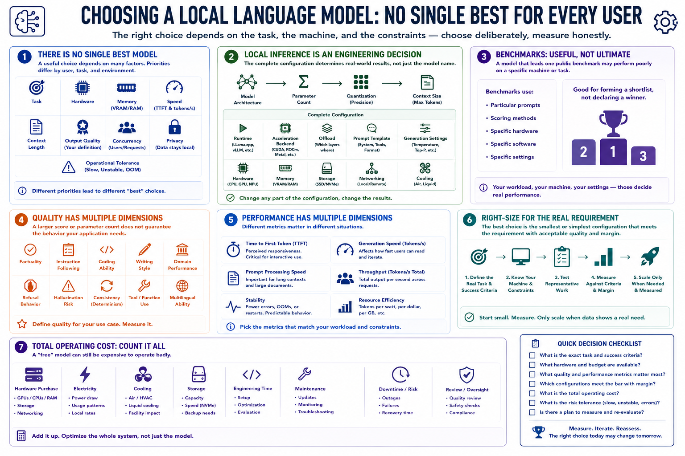

Why Model Choice Depends on Hardware
Connecting to LMS... Progress: in progress

Narration
There is no single best local language model for every user. A useful choice depends on the task, hardware, memory, speed, context, output quality, concurrency, privacy, and operational tolerance for slow or unstable behavior.
Local inference is a hardware-constrained engineering decision. The complete configuration includes model architecture, parameter count, quantization, context size, runtime, acceleration backend, offload, prompt template, generation settings, and cooling.
A model that leads one public benchmark may perform poorly on a specific machine or task. Benchmarks use particular prompts, scoring methods, hardware, software, and settings. They are useful for forming a shortlist, not declaring a permanent winner.
Quality has several dimensions: factuality, instruction following, coding ability, writing style, domain performance, refusal behavior, hallucination risk, and consistency. A larger score or parameter count does not guarantee the behavior an application needs.
Performance also has multiple dimensions. Time to first token matters in interactive use. Generation speed affects reading pace. Prompt processing matters for long documents. Throughput and stability matter for batch jobs and multiple users.
The best choice is the smallest or simplest configuration that meets the real requirement with acceptable quality and margin. Start with the task and machine, test representative work, and scale only when measured shortcomings justify it.
Include total operating cost in the decision: hardware purchase, electricity, cooling, storage, engineering time, maintenance, downtime, and review effort. A free model can still be expensive to operate badly.